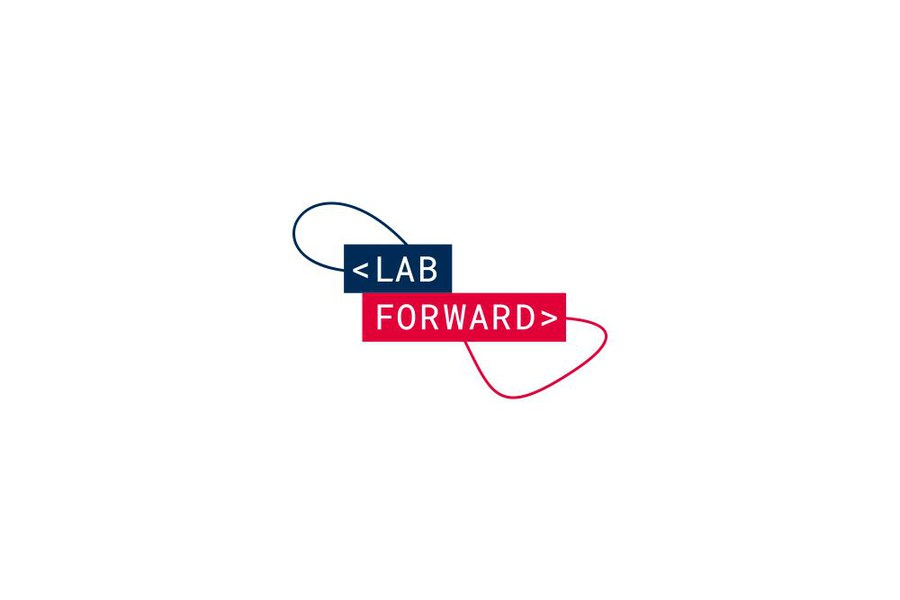

From lab software to AI-powered workflow.
As Senior Product Manager at Labforward, I owned product roadmap work across lab management, GenAI experiments, rapid validation loops, and workspace unification, turning fragmented scientific workflows into systems users could trust.
The problem
The product had lab data. Scientists still had tab fatigue.
Labforward served scientists running complex lab work, but the daily workflows were still fragmented. Scientists copied data from old experiments into new ones. IoT controls lived apart from experiment execution. Product ideas took weeks to validate, then too often came back with the same answer: “This is not what we meant.”
My role was to own the product roadmap for core lab management products and bring a more evidence-led operating model to the team. That meant using AI where it actually changed the workflow, not where it merely sounded impressive.
The throughline was simple: reduce manual work for scientists, validate before building, and connect disconnected lab systems into a workspace that matched how people actually worked.
AI case study
Chat with Experiment.
I watched a scientist flip between six browser tabs for twenty minutes, copying buffer concentrations from an old experiment into a new one, field by field. When I asked how often she did this, she laughed: “Every single day.”
We shipped a production multi-agent system where specialized agents handled distinct responsibilities: retrieval for relevant past experiments, reasoning for scientific context and user intent, and execution for auto-filling validated form fields.
The first approach used simple RAG. It worked technically, but users said it was accurate and slow. We evolved the design into orchestrated agents with a coordinator that routed queries and aggregated outputs. The system served real scientific workflows, not synthetic demos.
- Reached 70% adoption in production among users.
- Eliminated 1-2 hours of daily manual data copying for affected workflows.
- Moved GenAI from demo territory into daily scientific work.
Process case study
Validation before commitment.
Half of what we built came back with the same response: “This is not what we meant.” A customer request sat in the CS backlog, Product and Design spent weeks on mockups, Engineering built for weeks, and the team discovered the mismatch only after the expensive work had already happened.
I did not mandate a new process from the top. I ran a pilot. When a customer requested better experiment search, I skipped the usual two-week design phase, built a working prototype with Cursor and v0.dev in four hours, and showed it to the customer the next day.
One day of work revealed what weeks of mockups would have missed: they wanted to search by reagent, not just experiment name. The pilot changed the team’s default question from “when can we build?” to “have we validated this yet?”
- Reduced time-to-validation from 8-12 weeks to 2-3 weeks.
- Cut rework rate from 50% to 15%.
- Increased feature adoption from 40% to 75%.
Workspace case study
One workspace for the lab.
A customer complaint landed on my desk, but I did not want to just fix what they asked for. I scheduled deep interviews with about ten users. The real problem was bigger than a missing feature.
Labforward had two separate systems: an IoT control dashboard for lab equipment and a lab execution system for running experiments. Scientists switched tabs constantly, copying data between systems. One user said, “If I’m going to use your app, I want it to help me, not slow me down.”
I led the project end-to-end: discovery, user research, mockup design, problem validation, cross-functional ideation with engineering, design, and sales, implementation clarifications, and final validation before launch.
- Reached 60% adoption among users.
- Supported a €500K contract renewal.
- Turned frustrated customer stakeholders into product advocates.

“Matt dives in with curiosity and focus, turning ideas into tangible outcomes.”Jeroen de Haas, CPO at Labforward
Explore more